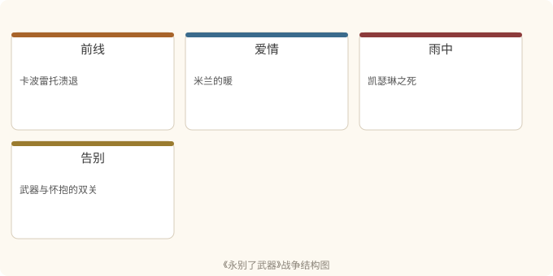

永别了，武器
一、基本信息
| 作者 | 海明威 |
|---|---|
| 成书/出版 | 1929年（作者页 B051/B024 口径：永别了武器（1929）） Ernest Hemingway — Encyclopaedia Britannica（百科全书） |
| 国别/地区 | 美国 |
| 时代 | 现当代 · 20世纪 |
| 体裁 | 长篇小说 |
| 语言 | 英语 |

《永别了武器》战争结构图（主题·结构图）
二、创作背景
作者页（B051/B024）：海明威 major_works 载'永别了武器（1929）'（作者页定位，详见 laorenhai 条核对）。
题材（通说待核）：一战意大利战线的美国救护车司机弗雷德里克·亨利与护士凯瑟琳——'告别武器'与'告别 arms（怀抱）'的双关。
三、内容脉络
卡波雷托溃退→米兰的爱情→凯瑟琳死于难产——雨中的结局（通说待核）。
四、主要人物表
| 人物 | 身份 | 说明 |
|---|---|---|
| 弗雷德里克·亨利 | 救护车司机 | （通说待核） |
| 凯瑟琳 | 护士 | 死于难产（通说待核） |
五、主题与艺术特点
- '世界打断每一个人'（名句通说待核——The world breaks every one）。
- 战争的个人拒绝（通说）。
- 雨与死亡的意象（通说待核）。
六、影响与评论
- 作者页：海明威代表作（B051/B024 作者页口径）。
Ernest Hemingway — Encyclopaedia Britannica（百科全书） - 反战文学的经典（通说待核）。
Ernest Hemingway — Encyclopaedia Britannica（百科全书）
七、阅读建议
难点
- 冰山文体。
- 意大利战线史。
- 《永别了，武器》（上海译文出版社，通说待核）。
- 英文原版（公有领域渐近）。
海明威三连读：《太阳》《武器》《丧钟》。
八、待核实
- 1929年出版（Scribner说）核对。
- 亨利/凯瑟琳人名核对。
- '世界打断每一个人'原文核对。
本页主要来源
- Ernest Hemingway — Encyclopaedia Britannica（百科全书）
- The Old Man and the Sea — Encyclopaedia Britannica（百科全书）
海明威的其他收录作品：老人与海